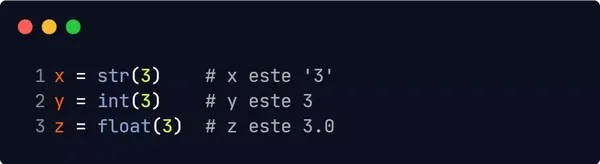
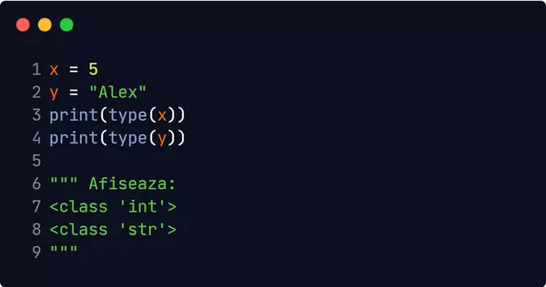
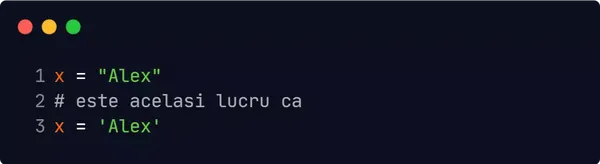
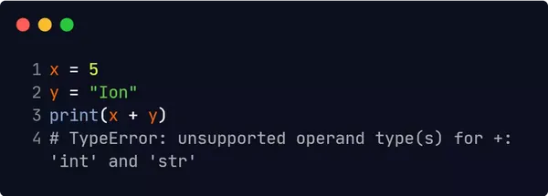

Variabilele in Python
Variabilele sunt containere care stochează valorile datelor.
Python nu are o comandă pentru declararea unei variabile.
O variabilă este creată în momentul în care îi atribuim pentru prima dată o valoare.
In Python nu este nevoie să specificați tipul unei variabile.
Acesta poate fi schimbată si după ce a fost setată.
Casting
Totuși dacă doriți să specificați tipul unei variabile puteți folosi un casting.

Funcția Type
Dacă doriți să aflați tipul de date a unei variabile veți folosi funcția type()

Variabilele de tip string pot fi declarate atât cu ' ' cât și cu " ".

Case-Sensitive
Numele variabilelor este case-sensitiv.
Numele variabilelor
O variabilă poate avea un nume scurt (x sau y) sau detaliat (vârstă, nume, prenume)
Reguli pentru denumirea variabilelor:
- Un nume de variabilă trebuie să înceapă cu o literă sau cu caracterul underscores
- Un nume de variabilă nu poate începe cu un număr
- Variabilele sunt case-sensitive (vârstă, Vârstă, VÂRSTĂ sunt 3 variabile diferite)
- Un nume de variabilă poate conține numai caractere alfanumerice și caracterul underscores (A-z, 0-9 și
_ )
Variabile legale:
Variabile ilegale:
Variabile la ieșire
Pentru a combina textul și o variabilă, Python folosește caracterul +.
De asemenea, puteți utiliza caracterul + pentru a adăuga o variabilă la o altă variabilă:
Pentru numere, caracterul + functionează ca un operator matematic:
Dacă incercați să combinați un șir și un număr, Python vă va da o eroare:

Variabile globale
Variabilele globale sunt acele variabile care sunt create în afara unei funcții.
Pot fi utilizate de toată lumea, atât în interiorul funcțiilor cât și în exterior.
Cuvântul cheie Global
În mod normal, atunci când creați o variabilă în interiorul unei funcții, acea variabilă este locală și
poate fi utilizată numai în interiorul acelei funcții.
Daca veți folosi cuvântul cheie global, variabila apaține domeniului global:
Booleene
Pentru a crea un program cu un comportament specific, codul trebuie să se execute într-o anumită manieră.
Acest comportament poate fi determinat cu ajutorul blocurilor condiționale, care se bazează pe evaluarea
expresiilor. O expresie logică poate avea doar valoarea false sau true. Când
comparăm două valori,
rezultatul comparației va fi de valoare booleană.

Puteți executa cod în funcție de condițiile logice impuse. Spre exemplu, puteți afișa care dintre 2
numere
este mai mare:

Acest bloc de cod afișează care dintre cele două numere este mai mare. În condițiile în care x este mai
mare decât y, programul va afișa "x este mai mare decât y". Daca y este mai mare decât x, se va afișa
blocul elif. Dacă niciuna din condiții nu este adevarată, se va executa blocul
else care va
afișa "x
și y sunt egale", deoarece niciuna dintre condiții nu a fost satisfacută.